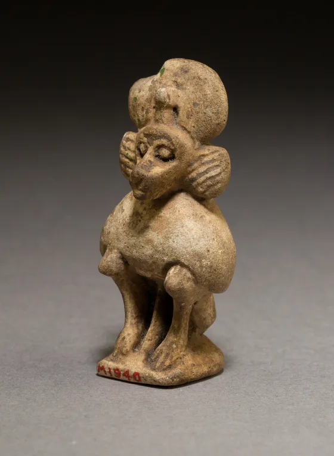

Arte y tarot
El Tarot de Thoth: Frieda Harris, Crowley y un Mercurio que no se quedaba quieto
Una pintora de casi sesenta años, un ocultista célebre y un proyecto de seis meses que se volvió de cinco años, en plena guerra. Esta es la historia del Tarot de Thoth contada desde el taller: desde las cartas, las dudas y los pinceles de Frieda Harris.

Mide menos de cinco centímetros. Un babuino sentado, con las manos sobre las rodillas y un disco lunar sobre la cabeza: así imaginaron los antiguos egipcios a Thot, el dios de la escritura, en una de sus formas. Unos dos mil años después, en Inglaterra, una pintora le escribía a Aleister Crowley preocupada por ese mismo animal. Estaba pintando al Mago, la carta que en su mazo se llamaría The Magus, y no lograba que la figura respirara: «Es un dios poderoso. Sin duda debería moverse el Mono, no la Figura Eterna. ¿Tú qué piensas?» (traducción propia).
En este blog ya contamos cómo el siglo XVIII imaginó un origen egipcio para el tarot y cómo la Golden Dawn convirtió las cartas en un laboratorio de símbolos, del que salieron dos grandes mazos del siglo XX: el de Pamela Colman Smith y el de Thoth. Hoy entramos al segundo por la puerta del taller, donde una artista pasó cinco años discutiendo con un dios que no se quedaba quieto.
Una pintora de casi sesenta años
Frieda Harris nació en Londres en 1877, hija de un cirujano, y en 1901 se casó con Percy Harris, político liberal que llegaría a ser jefe de bancada de su partido en el Parlamento. Cuando él recibió el título de baronet, en 1932, ella pasó a ser Lady Harris. Él la describió así en sus memorias: «Mi esposa es artista, y una buena artista. Se toma su arte en serio; de hecho, pinta siete días a la semana y, en general, doce de cada veinticuatro horas» (traducción propia).
El 8 de junio de 1937, el escritor Clifford Bax la presentó con Aleister Crowley en el Royal Automobile Club de Londres. Ella tenía casi sesenta años. Según el historiador Richard Kaczynski, Harris buscaba por entonces muchos caminos a la vez: hacia 1937 o 1938 estudiaba antroposofía y geometría proyectiva en la Rudolf Steiner House, era comasona y, desde ese encuentro, se volvió alumna de Crowley y entró en sus órdenes.
Seis meses que se volvieron cinco años
En mayo de 1938, Crowley le prestó un número de su revista The Equinox de 1912 que describía las cartas del tarot según la tradición de la Golden Dawn. Harris propuso pintar un mazo a partir de esas descripciones, porque no existía ninguno. Calcularon seis meses. Pronto vieron que las descripciones no alcanzaban, y fue ella, cuenta Kaczynski, quien lo animó a diseñar un mazo completamente nuevo y a escribir un tratado que lo explicara. Ella además le pagaba una asignación para sostener el trabajo.
Se veían a menudo, pero trabajaban por separado: Crowley le enviaba descripciones y bocetos, y ella le devolvía las pinturas terminadas para su aprobación. Él era muy exigente. Más de una docena de cartas tuvieron nuevas versiones, y el caso extremo fue el Mago: Harris lo pintó siete veces antes de que Crowley lo aceptara.
Un Mercurio que no se quedaba quieto
En la tradición hermética, Mercurio, Hermes y Thot son el mismo dios con distintos nombres, y el animal de Thot es el babuino, el cinocéfalo. Crowley y Harris llamaban «Mercurio» al Mago, la carta I. La investigadora Deja Whitehouse, que catalogó para el Warburg Institute la correspondencia de Harris, muestra cómo ese dios se volvió casi un personaje en sus cartas. En septiembre de 1939 ella confesaba que no sabía qué hacer con él después de la descripción de Crowley. En otra carta escribía: «Mercurio está haciendo un escándalo espantoso. Cómo me gustaría volver a hacerlas todas» (traducción propia). Y en esa misma carta: «Apenas empiezo a entender a qué quieres llegar. Esos cuatro ases van a ser una fiesta».
Mercurio se metía también en la vida diaria. Una vez, al tratar de arreglar un lavabo con un martillo, Harris terminó rajando toda la porcelana, y se lo contó a Crowley con humor: Mercurio, decía, estaba «de un humor muy de mono». Es una imagen preciosa del trabajo creativo: un símbolo que se toma tan en serio que empieza a habitar la casa.
El infinito en el centro
Mira cualquier carta del Tarot de Thoth y verás algo que no tienen los mazos antiguos: las figuras no están quietas sobre un fondo, sino atravesadas por arcos, redes, rayos y curvas que parecen seguir más allá del borde. Parte de esa sensación viene de las clases que Harris tomó en la Rudolf Steiner House con George Adams y Olive Whicher, que enseñaban geometría proyectiva sintética.
En esa geometría las líneas paralelas se encuentran en el infinito, y el espacio deja de ser una caja rígida para volverse un campo en movimiento. Adams y Whicher, siguiendo a Steiner, trabajaban además la idea de un espacio cuyo infinito está en el centro y no solo en la periferia. Claas Hoffmann, que conoció a Olive Whicher, propone que esa geometría une las cartas entre sí: si se recortan los triunfos sin sus marcos, dice, encajan unos con otros de manera armónica. Crowley veía en esa armonía la prueba de que los símbolos y los colores estaban bien aplicados. Es una lectura que se puede comprobar con los ojos, y que convierte el mazo en un solo paisaje partido en setenta y ocho ventanas.
Exponer en tiempos de guerra
Las pinturas se terminaron en plena Segunda Guerra Mundial, y había que encontrar quién financiara la impresión. En 1941 intentaron una exposición en Oxford: la galería que la había ofrecido se echó para atrás y la muestra terminó en el Hotel Randolph. En marzo de 1942, Harris colgó las cartas en Chipping Campden, el pueblo donde vivía, durante una semana de recaudación para la guerra.
Al principio ambos habían acordado mantenerse anónimos. Pero en julio de 1942 Harris organizó por su cuenta una exposición en las Berkeley Galleries de Londres, en el número 20 de Davies Street, con un catálogo nuevo y presentándose como la autora. Whitehouse cuenta que Crowley se indignó y pensó en emprender acciones legales; luego hablaron cara a cara, se reconciliaron y él fue a ver la muestra. En su diario anotó, con tres signos de exclamación, que ella había puesto el As de Espadas en el escaparate. El catálogo incluía un formulario de suscripción para reunir 1,500 libras y hacer imprimir el mazo a color.
El 16 de julio de 1942, The Birmingham Post describió las 78 obras como diseños «llenos de movimiento, para sugerir el tiempo, y bellos en patrón y color» (traducción propia), y contó que Lady Harris esperaba verlos un día reproducidos como el tarot del siglo XX. Ese mismo año, según Kaczynski, obra suya colgó en las Leicester Galleries junto a la de Henry Moore, Graham Sutherland, Paul Nash e Ithell Colquhoun, en la exposición Imaginative Art since the War.
Un mazo que llegó después
El libro llegó primero. En 1944 apareció The Book of Thoth, firmado por «The Master Therion», el nombre mágico de Crowley, en una edición de 200 ejemplares numerados. Crowley lo vivió como la culminación de su obra: en una carta de 1942 escribió que el proyecto era «la reivindicación del trabajo de mi vida durante los últimos 44 años» y que sería «la Brújula y la Fuerza del buen barco de la Magia durante los próximos 2,000 años» (traducción propia). Así lo creía él.
El mazo impreso tardó mucho más. Crowley murió en 1947. Harris, viuda desde 1952, se fue a la India, hizo la escenografía de un ballet de Ram Gopal sobre el Taj Mahal y vivió sus últimos años en una casa flotante en Srinagar, donde murió en 1962. Hasta el final defendió los colores de su mazo: en 1961 advirtió a la editorial Llewellyn que una versión recoloreada a partir de las láminas en blanco y negro del libro, sin el equilibrio de las cuatro escalas de color tradicionales, acabaría por «destruir las propiedades mágicas de mi Baraja» (traducción propia). Era su convicción, y también la de una pintora que sabía que en el color está casi todo.
La primera edición a color la publicó Llewellyn a partir de fotografías de las pinturas tomadas por Grady McMurtry. Kaczynski la fecha en 1971; las reconstrucciones de la historia editorial del mazo dan fechas entre 1969 y 1972. Ninguno de sus dos autores llegó a sostenerla en las manos.
Del Warburg a Venecia
Harris dejó las pinturas originales a Gerald Yorke, uno de los colaboradores más cercanos de Crowley, que las confió al Warburg Institute de Londres junto con los libros y papeles que hoy forman la Colección Yorke. Entre 2006 y 2011, la conservadora del Instituto, Susan Campion, las restauró. Desde entonces han salido a la luz pocas veces: cuatro triunfos en la muestra Traces du sacré del Centro Pompidou en 2008; nueve pinturas en la Bienal de Venecia de 2013, en Il Palazzo Enciclopedico, curada por Massimiliano Gioni; y, entre el 31 de enero y el 30 de abril de 2025, la exposición Tarot: Origins & Afterlives del Warburg, que las mostró en Inglaterra por primera vez desde la muerte de Harris.
La revista Wallpaper* habló de colores intensamente saturados, con un pulso psicodélico. Bill Sherman, director del Warburg y cocurador de la muestra, dijo entonces algo que vale para todo el tarot: «El tarot es un ejemplo inusual de un conjunto limitado de convenciones o marcos dentro de los cuales los artistas deben trabajar. No puedes reinventar la rueda de la fortuna. Creo que esas limitaciones pueden ser a menudo la clave de un trabajo creativo fértil» (traducción propia).
Lo que permanece abierto
Los documentos cuentan las fechas, las cartas, las exposiciones, las siete versiones del Mago. Cuentan que un proyecto de seis meses se volvió de cinco años, y que una pintora de sesenta años se tomó un dios tan en serio que lo dejó entrar a su casa. No agotan lo que pasa cuando alguien mira hoy una de esas cartas y siente que las líneas siguen moviéndose más allá del borde. Para quienes las usan como lenguaje mágico, ese movimiento es una creencia viva; para quienes las miran como pintura, es una lección de geometría y de color. Las dos miradas caben en la misma carta.
Te proponemos un ejercicio a la manera de Harris. Elige una carta, la que tengas cerca. Busca en ella una línea que parezca querer salir del marco y síguela con el dedo, imaginando hacia dónde va. Después pregúntate qué parte de la imagen debería moverse y cuál quedarse quieta, como ella con su Mago. Lo que respondas ya es una lectura.
Fuentes
- Whitehouse, Deja. «‘Mercury is in a Very Ape-Like Mood’: Frieda Harris’s Perception of Thelema». Aries: Journal for the Study of Western Esotericism 21, n.º 1 (2021), pp. 125-152, Brill. DOI: 10.1163/15700593-02101005. doi.org
- Kaczynski, Richard. «Frieda Lady Harris». Lion & Eagle, US Grand Lodge, Ordo Templi Orientis. oto-usa.org
- Harris, Frieda. Carta a Aleister Crowley, sin fecha («Mercury is fussing dreadfully…»), transcripción. bapho.net
- Hoffmann, Claas. «Projective Synthetic Geometry in Lady Frieda Harris' Tarot Paintings and in Aleister Crowley's Book of the Law». parareligion.ch
- The 100th Monkey Press. Ficha bibliográfica: Exhibition of 78 Paintings of the Tarot Cards by Frieda Harris, Berkeley Galleries, Londres, 1942. 100thmonkeypress.com
- «The Tarot Cards». The Birmingham Post, 16 de julio de 1942, p. 2 (reproducción). 100thmonkeypress.com (PDF)
- Bonhams. Lote 322: Crowley, Aleister. The Book of Thoth, O.T.O., [1944], ejemplar n.º 102 de 200. bonhams.com
- Wikipedia. «Thoth Tarot» (historia de las ediciones). en.wikipedia.org
- TABI (Tarot Association of the British Isles). «Magenta's Musings: Lady Frieda Harris», noviembre de 2021. tabi.org.uk
- Ordo Templi Orientis. «Crowley-Harris Thoth Tarot Paintings in the Venice Biennale» y «Thoth Tarot Restoration Project Completed», 10 de abril de 2013. oto.org
- The Warburg Institute. «Tarot – Origins & Afterlives: Opening Soon at the Warburg Institute», 14 de enero de 2025. warburg.sas.ac.uk
- The Warburg Institute. «The Yorke Collection». warburg.sas.ac.uk
- Wroe, Nicholas. «From secret societies to Selfridges: the eccentric geniuses responsible for the macabre world of tarot». The Guardian, 27 de enero de 2025. theguardian.com
- Steer, Emily. «‘Tarot: Origins & Afterlives’: inside the world of tarot». Wallpaper*, 1 de febrero de 2025. wallpaper.com
- Imagen: Thoth as baboon, Egipto, periodo ptolemaico, fayenza, n.º de inventario 10.130.1940, The Metropolitan Museum of Art, dominio público. metmuseum.org
Las citas de Frieda Harris, Percy Harris, Aleister Crowley, The Birmingham Post y Bill Sherman provienen de los originales en inglés; las traducciones al español son nuestras.